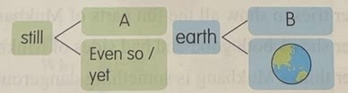
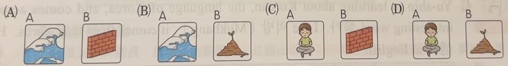
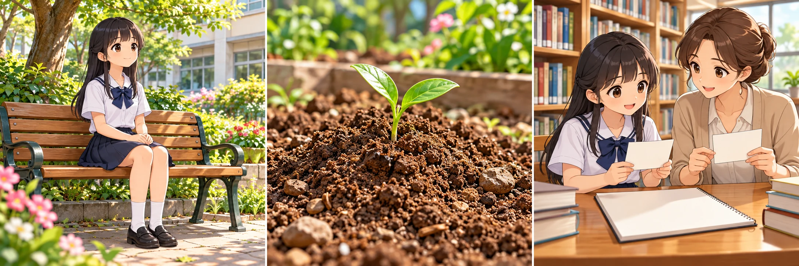
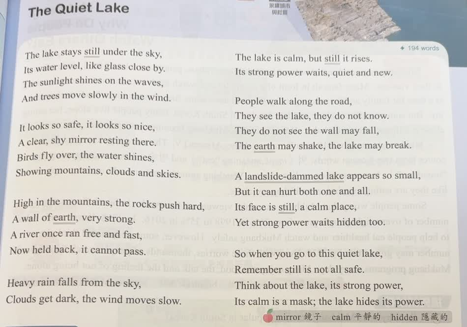
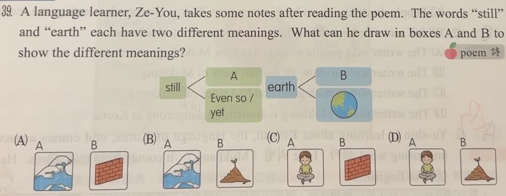

分享原卷｜第 39 題
完整原題
作答所需文章／材料
The Quiet Lake The lake stays still under the sky, Its water level, like glass close by. The sunlight shines on the waves, And trees move slowly in the wind. It looks so safe, it looks so nice, A clear, shy mirror resting there. Birds fly over, the water shines, Showing mountains, clouds and skies. High in the mountains, the rocks push hard, A wall of earth, very strong. A river once ran free and fast, Now held back, it cannot pass. Heavy rain falls from the sky, Clouds get dark, the wind moves slow. The lake is calm, but still it rises. Its strong power waits, quiet and new. People walk along the road, They see the lake, they do not know. They do not see the wall may fall, The earth may shake, the lake may break. A landslide-dammed lake appears so small, But it can hurt both one and all. Its face is still, a calm place, Yet strong power waits hidden too. So when you go to this quiet lake, Remember still is not all safe. Think about the lake, its strong power, Its calm is a mask; the lake hides its power. 字詞：mirror 鏡子；calm 平靜的；hidden 隱藏的；poem 詩。

先想一想，再查看答案、解說與原圖
逐項解析
| 選項與原句 | 判讀 | 句意與判斷理由 |
|---|---|---|
| (A) A：海浪；B：磚牆 | 不選 | 海浪不能表現 still 的靜止義；磚牆也不是 earth 的泥土義。 |
| (B) A：海浪；B：土堆 | 不選 | 土堆符合 earth 的泥土義，但海浪不符合 still 的靜止義。 |
| (C) A：安靜坐著的人；B：磚牆 | 不選 | 安靜坐著的人符合 still 的靜止義，但磚牆不是 earth 的泥土義。 |
| (D) A：安靜坐著的人；B：土堆 | 應選 | still 除了「仍然」還有「靜止的」；earth 除了「地球」還有「泥土」，應配靜坐者與土堆。 |
詳細說明與解題步驟
一、先讀已給的筆記
still 的另一格寫 Even so / yet，表示「即使如此、然而」等轉折意思；earth 的另一格畫地球。因此空格要補不同的另一義，不能重複填仍然或地球。
二、回詩句判意思
The lake stays still 與 Its face is still 都描述湖面靜止、平靜，故 A 應畫安靜坐著的人。A wall of earth 指土石形成的阻隔，其中 earth 是泥土，故 B 應畫土堆。
三、對照四組圖
只有 D 同時符合「靜止」與「泥土」。原卷選 A，海浪與磚牆雖出現在湖或堤的聯想中，卻不是這兩個單字在此處的另一個意思。
字義題先找同一個字在原文中的實際用法，再比較圖片，避免只憑題材聯想。
原詩寫的是「A clear, shy mirror」，以害羞的鏡子擬人描寫湖面；不是先前整理的shiny。按原圖保留用字，不把不熟悉的詩句改成較常見的形容詞。

① stays still：保持靜止、平靜
The lake stays still與Its face is still，都在描寫湖面平靜。A要補這個字義，安靜坐著、不亂動的人較符合；海浪的動態不合。
② A wall of earth：泥土形成的阻隔
earth在這個片語中是泥土。B要畫土堆，不能因wall是牆，就直接畫磚牆。句子要整組看，earth才是本題要辨認的字。
③ 原筆記已給一義，空格要補另一義
still另一格已寫Even so / yet；earth另一格已畫地球。因此空格分別補靜止與泥土。依原文用法配圖，只有D把兩格都配對。
④ 先看已給的字義，再補靜止與泥土
答案 D：A靜坐者，B土堆
- still：此處補靜止、不動。
- earth：此處補泥土。
- 先核對已給的一義，避免重複或只憑題材聯想。
核對註記：已核對題幹、全部選項與必要材料；教材對應課次未確認，歸綜合。
原圖（僅本題）

